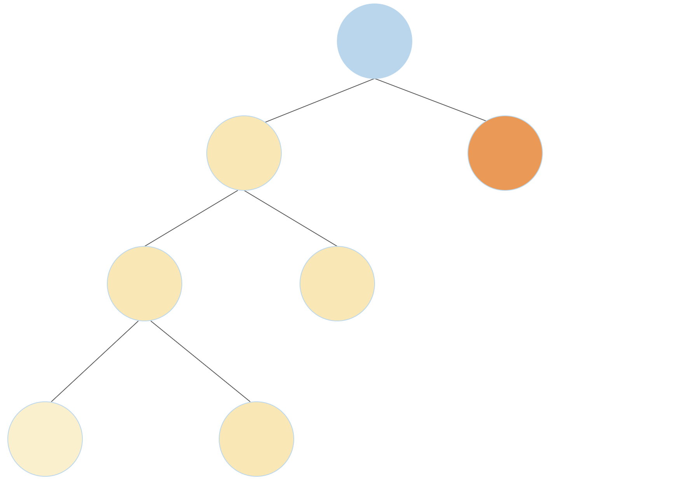
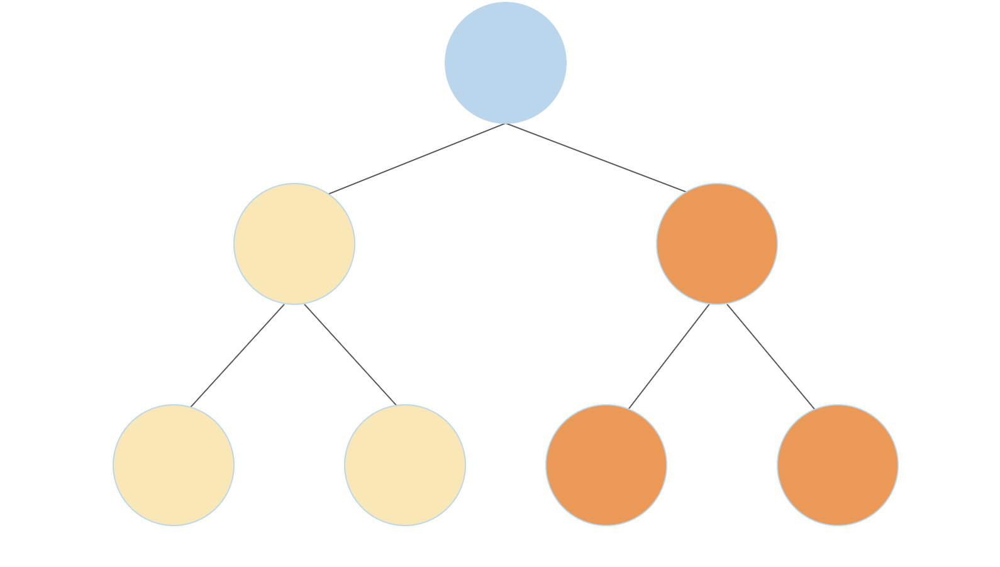

Lab 12 Solutions
Solution Files
Note: This assignment will not be graded. It is intended to help you prepare for the final exam. You do not need to submit anything for this assignment.
Recursion and Tree Recursion
Q1: Subsequences
A subsequence of a sequence S is a subset of elements from S, in the same
order they appear in S. Consider the list [1, 2, 3]. A few of its
subsequences are [], [1, 3], [2], and [1, 2, 3].
Write a function that takes in a list and returns all possible subsequences of that list. The subsequences should be returned as a list of lists, where each nested list is a subsequence of the original input.
In order to accomplish this, you might first want to write a function insert_into_all
that takes an item and a list of lists, adds the item to the beginning of each nested list,
and returns the resulting list.
def insert_into_all(item, nested_list):
"""Return a new list consisting of all the lists in nested_list,
but with item added to the front of each. You can assume that
nested_list is a list of lists.
>>> nl = [[], [1, 2], [3]]
>>> insert_into_all(0, nl)
[[0], [0, 1, 2], [0, 3]]
"""
return [[item] + lst for lst in nested_list]
def subseqs(s):
"""Return a nested list (a list of lists) of all subsequences of S.
The subsequences can appear in any order. You can assume S is a list.
>>> seqs = subseqs([1, 2, 3])
>>> sorted(seqs)
[[], [1], [1, 2], [1, 2, 3], [1, 3], [2], [2, 3], [3]]
>>> subseqs([])
[[]]
"""
if not s: return [[]] else:
subset = subseqs(s[1:]) return insert_into_all(s[0], subset) + subsetUse Ok to test your code:
python3 ok -q subseqsQ2: Non-Decreasing Subsequences
Just like the last question, we want to write a function that takes a list and returns a list of lists, where each individual list is a subsequence of the original input.
This time we have another condition: we only want the subsequences for which
consecutive elements are nondecreasing. For example, [1, 3, 2] is a
subsequence of [1, 3, 2, 4], but since 2 < 3, this subsequence would not
be included in our result.
You may assume that the list passed in as s contains only nonnegative elements.
Fill in the blanks to complete the implementation of the non_decrease_subseqs
function. You may assume that the input list contains no negative elements.
You may use the provided helper function insert_into_all, which takes in an
item and a list of lists and inserts the item to the front of each list.
def non_decrease_subseqs(s):
"""Assuming that S is a list, return a nested list of all subsequences
of S (a list of lists) for which the elements of the subsequence
are strictly nondecreasing. The subsequences can appear in any order.
>>> seqs = non_decrease_subseqs([1, 3, 2])
>>> sorted(seqs)
[[], [1], [1, 2], [1, 3], [2], [3]]
>>> non_decrease_subseqs([])
[[]]
>>> seqs2 = non_decrease_subseqs([1, 1, 2])
>>> sorted(seqs2)
[[], [1], [1], [1, 1], [1, 1, 2], [1, 2], [1, 2], [2]]
"""
def subseq_helper(s, prev):
if not s:
return [[]] elif s[0] < prev:
return subseq_helper(s[1:], prev) else:
a = subseq_helper(s[1:], s[0]) b = subseq_helper(s[1:], prev) return insert_into_all(s[0], a) + b return subseq_helper(s, 0)Use Ok to test your code:
python3 ok -q non_decrease_subseqsQ3: Number of Trees
A full binary tree is a tree where each node has either 2 branches or 0 branches, but never 1 branch.
Write a function which returns the number of unique full binary tree structures that have exactly n leaves. See the doctests for visualizations of the possible full binary tree sturctures that have 1, 2, and 3 leaves.
Hint: A full binary tree can be constructed by connecting two smaller full binary trees to a root node. If the two smaller full binary trees have
aandbleaves, the new full binary tree will havea + bleaves. For example, as shown in the first diagram below, a full binary tree with 4 leaves can be constructed by connecting a full binary tree that has three leaves (yellow) with a full binary tree that has one leaf (orange). A full binary tree with 4 leaves can also be constructed by connecting two full binary trees with 2 leaves each (second diagram) 
For those interested in combinatorics, this problem does have a closed form solution):
def num_trees(n):
"""Returns the number of unique full binary trees with exactly n leaves. E.g.,
1 2 3 3 ...
* * * *
/ \ / \ / \
* * * * * *
/ \ / \
* * * *
>>> num_trees(1)
1
>>> num_trees(2)
1
>>> num_trees(3)
2
>>> num_trees(8)
429
"""
if n == 1:
return 1
return sum(num_trees(k) * num_trees(n-k) for k in range(1, n))Use Ok to test your code:
python3 ok -q num_treesGenerators
Q4: Partition Generator
Construct the generator function partition_gen, which takes in a number n and returns an n-partition iterator. An n-partition iterator yields partitions of n, where a partition of n is a list of integers whose sum is n. The iterator should only return unique partitions; the order of numbers within a partition and the order in which partitions are returned does not matter.
Important: The skeleton code is only a suggestion; feel free to add or remove lines as you see fit.
def partition_gen(n):
"""
>>> partitions = [sorted(p) for p in partition_gen(4)]
>>> for partition in sorted(partitions): # note: order doesn't matter
... print(partition)
[1, 1, 1, 1]
[1, 1, 2]
[1, 3]
[2, 2]
[4]
"""
def yield_helper(num, segment):
if num == 0:
yield [] elif num > 0 and segment > 0: for small_part in yield_helper(num - segment, segment): yield [segment] + small_part yield from yield_helper(num, segment - 1) yield from yield_helper(n, n)Use Ok to test your code:
python3 ok -q partition_genObject-Oriented Programming
Q5: Cucumber
Cucumber is a card game. Cards are positive integers (no suits). Players are numbered from 0 up to players
(0, 1, 2, 3 in a 4-player game).
In each Round, the players each play one card, starting with the starter and
in ascending order (player 0 follows player 3 in a 4-player game). If the card played is as high or higher than
the highest card played so far, that player takes control. The winner is the last player who took control
after every player has played once.
Implement Round so that CucumberGame behaves as described in the doctests below.
Hint: Here is an example of a try-catch with an
AssertionError>> try: ... assert False, 'oh no!' ... except AssertionError as e: ... print(e) ... oh no!
class CucumberGame:
"""Play a round and return all winners so far. Cards is a list of pairs.
Each (who, card) pair in cards indicates who plays and what card they play.
>>> g = CucumberGame()
>>> g.play_round(3, [(3, 4), (0, 8), (1, 8), (2, 5)])
>>> g.winners
[1]
>>> g.play_round(1, [(3, 5), (1, 4), (2, 5), (0, 8), (3, 7), (0, 6), (1, 7)])
It is not your turn, player 3
It is not your turn, player 0
The round is over, player 1
>>> g.winners
[1, 3]
>>> g.play_round(3, [(3, 7), (2, 5), (0, 9)]) # Round is never completed
It is not your turn, player 2
>>> g.winners
[1, 3]
"""
def __init__(self):
self.winners = []
def play_round(self, starter, cards):
r = Round(starter)
for who, card in cards:
try:
r.play(who, card)
except AssertionError as e:
print(e)
if r.winner != None:
self.winners.append(r.winner)
class Round:
players = 4
def __init__(self, starter):
self.starter = starter
self.next_player = starter
self.highest = -1
self.winner = None
def play(self, who, card):
assert not self.is_complete(), f'The round is over, player {who}'
assert who == self.next_player, f'It is not your turn, player {who}'
self.next_player = (who + 1) % Round.players if card >= self.highest:
self.highest = card self.control = who if self.is_complete(): self.winner = self.control
def is_complete(self):
""" Checks if a game could end. """
return self.next_player == self.starter and self.highest > -1Use Ok to test your code:
python3 ok -q CucumberGameQ6: Miss Manners
Create a class called MissManners that promotes politeness among our
objects. A MissManners object takes another object on construction.
It has one method, called ask. It responds by calling methods on the
object it contains, but only if the caller said please first.
We can also compose multiple instances of MissManners objects upon
each other (see double_fussy in doctests). A multilevel MissManners object
must be politely requested to ask its own MissManners object. This continues
until we reach the bottom level MissManners object.
Hint: Use
getattr(Python docs) andhasattr(Python docs) to access methods using strings. You may want to search online for some examples of their usage.Hint: Your implementation will need to use the
*argsnotation that allows functions to take a flexible number of arguments. If you need a refresher, take a look at your implementation ofmake_averagedin the Hog project.
class MissManners:
"""A container class that only forwards messages that say please.
>>> v = VendingMachine('teaspoon', 10)
>>> v.restock(2)
'Current teaspoon stock: 2'
>>> m = MissManners(v)
>>> m.ask('vend')
'You must learn to say please first.'
>>> m.ask('please vend')
'Please add $10 more funds.'
>>> m.ask('please add_funds', 20)
'Current balance: $20'
>>> m.ask('now will you vend?')
'You must learn to say please first.'
>>> m.ask('please hand over a teaspoon')
'Thanks for asking, but I know not how to hand over a teaspoon.'
>>> m.ask('please vend')
'Here is your teaspoon and $10 change.'
>>> double_fussy = MissManners(m) # Composed MissManners objects
>>> double_fussy.ask('add_funds', 10)
'You must learn to say please first.'
>>> double_fussy.ask('please add_funds', 10)
'Thanks for asking, but I know not how to add_funds.'
>>> double_fussy.ask('please please add_funds', 10)
'Thanks for asking, but I know not how to please add_funds.'
>>> double_fussy.ask('please ask', 'please add_funds', 10)
'Current balance: $10'
"""
def __init__(self, obj):
self.obj = obj
def ask(self, message, *args):
magic_word = 'please '
if not message.startswith(magic_word):
return 'You must learn to say please first.'
attr = message[len(magic_word):]
if not hasattr(self.obj, attr):
return 'Thanks for asking, but I know not how to ' + attr + '.'
return getattr(self.obj, attr)(*args)Use Ok to test your code:
python3 ok -q MissMannersSince the check for "please" has been handled, all that's left is to add the code to support calling the stored object.
The first step is to check that the function we're trying to call exists in our object. If it does, then we let the object do the heavy lifting by getting the method and calling it on our arguments.
Video walkthrough:
Mutable Lists
Q7: Trade
In the integer market, each participant has a list of positive integers to trade. When two participants meet, they trade the smallest non-empty prefix of their list of integers. A prefix is a slice that starts at index 0.
Write a function trade that exchanges the first m elements of list first
with the first n elements of list second, such that the sums of those
elements are equal, and the sum is as small as possible. If no such prefix
exists, return the string 'No deal!' and do not change either list. Otherwise
change both lists and return 'Deal!'. A partial implementation is provided.
Hint: You can mutate a slice of a list using slice assignment. To do so, specify a slice of the list
[i:j]on the left-hand side of an assignment statement and another list on the right-hand side of the assignment statement. The operation will replace the entire given slice of the list fromiinclusive tojexclusive with the elements from the given list. The slice and the given list need not be the same length.>>> a = [1, 2, 3, 4, 5, 6] >>> b = a >>> a[2:5] = [10, 11, 12, 13] >>> a [1, 2, 10, 11, 12, 13, 6] >>> b [1, 2, 10, 11, 12, 13, 6]Additionally, recall that the starting and ending indices for a slice can be left out and Python will use a default value.
lst[i:]is the same aslst[i:len(lst)], andlst[:j]is the same aslst[0:j].
def trade(first, second):
"""Exchange the smallest prefixes of first and second that have equal sum.
>>> a = [1, 1, 3, 2, 1, 1, 4]
>>> b = [4, 3, 2, 7]
>>> trade(a, b) # Trades 1+1+3+2=7 for 4+3=7
'Deal!'
>>> a
[4, 3, 1, 1, 4]
>>> b
[1, 1, 3, 2, 2, 7]
>>> c = [3, 3, 2, 4, 1]
>>> trade(b, c)
'No deal!'
>>> b
[1, 1, 3, 2, 2, 7]
>>> c
[3, 3, 2, 4, 1]
>>> trade(a, c)
'Deal!'
>>> a
[3, 3, 2, 1, 4]
>>> b
[1, 1, 3, 2, 2, 7]
>>> c
[4, 3, 1, 4, 1]
>>> d = [1, 1]
>>> e = [2]
>>> trade(d, e)
'Deal!'
>>> d
[2]
>>> e
[1, 1]
"""
m, n = 1, 1
equal_prefix = lambda: sum(first[:m]) == sum(second[:n]) while m <= len(first) and n <= len(second) and not equal_prefix(): if sum(first[:m]) < sum(second[:n]): m += 1
else:
n += 1
if equal_prefix():
first[:m], second[:n] = second[:n], first[:m]
return 'Deal!'
else:
return 'No deal!'Use Ok to test your code:
python3 ok -q tradeQ8: Shuffle
Define a function shuffle that takes a sequence with an even number of
elements (cards) and creates a new list that interleaves the elements
of the first half with the elements of the second half.
To interleave two sequences s0 and s1 is to create a new sequence such that the new sequence contains (in this order) the first element of s0, the first element of s1, the second element of s0, the second element of s1, and so on.
Note: If you're running into an issue where the special heart / diamond / spades / clubs symbols are erroring in the doctests, feel free to copy paste the below doctests into your file as these don't use the special characters and should not give an "illegal multibyte sequence" error.
def card(n):
"""Return the playing card numeral as a string for a positive n <= 13."""
assert type(n) == int and n > 0 and n <= 13, "Bad card n"
specials = {1: 'A', 11: 'J', 12: 'Q', 13: 'K'}
return specials.get(n, str(n))
def shuffle(cards):
"""Return a shuffled list that interleaves the two halves of cards.
>>> shuffle(range(6))
[0, 3, 1, 4, 2, 5]
>>> suits = ['H', 'D', 'S', 'C']
>>> cards = [card(n) + suit for n in range(1,14) for suit in suits]
>>> cards[:12]
['AH', 'AD', 'AS', 'AC', '2H', '2D', '2S', '2C', '3H', '3D', '3S', '3C']
>>> cards[26:30]
['7S', '7C', '8H', '8D']
>>> shuffle(cards)[:12]
['AH', '7S', 'AD', '7C', 'AS', '8H', 'AC', '8D', '2H', '8S', '2D', '8C']
>>> shuffle(shuffle(cards))[:12]
['AH', '4D', '7S', '10C', 'AD', '4S', '7C', 'JH', 'AS', '4C', '8H', 'JD']
>>> cards[:12] # Should not be changed
['AH', 'AD', 'AS', 'AC', '2H', '2D', '2S', '2C', '3H', '3D', '3S', '3C']
"""
assert len(cards) % 2 == 0, 'len(cards) must be even'
half = len(cards) // 2 shuffled = []
for i in range(half): shuffled.append(cards[i]) shuffled.append(cards[half+i]) return shuffledUse Ok to test your code:
python3 ok -q shuffleLinked Lists
Q9: Link Pop
Implement link_pop, which is similar to the pop() method for lists.
link_pop takes in a Linked List lnk and optionally one extra argument index. If
provided a second argument, link_pop will remove the value at index from
the list and return it. If not given a second argument, link_pop will remove
the last value from the list and return it. Assume that you will never be asked
to remove an element at index 0 or at an index out of range.
Note: In the function definition,
index=-1denotes that when anindexargument is not provided, the value ofindexdefaults to-1.
def link_pop(lnk, index=-1):
'''Implement the pop method for a Linked List.
>>> lnk = Link(1, Link(2, Link(3, Link(4, Link(5)))))
>>> removed = link_pop(lnk)
>>> print(removed)
5
>>> print(lnk)
<1 2 3 4>
>>> link_pop(lnk, 2)
3
>>> print(lnk)
<1 2 4>
>>> link_pop(lnk)
4
>>> link_pop(lnk)
2
>>> print(lnk)
<1>
'''
if index == -1:
while lnk.rest.rest is not Link.empty: lnk = lnk.rest removed = lnk.rest.first lnk.rest = Link.empty else:
while index > 1: lnk = lnk.rest index -= 1 removed = lnk.rest.first lnk.rest = lnk.rest.rest return removedUse Ok to test your code:
python3 ok -q link_popQ10: Deep Linked List Length
A linked list that contains one or more linked lists as elements is called a
deep linked list. Write a function deep_len that takes in a (possibly deep)
linked list and returns the deep length of that linked list. The deep length of
a linked list is the total number of non-link elements in the list, as well as the
total number of elements contained in all contained lists. See the function's doctests
for examples of the deep length of linked lists.
Hint: Use
isinstanceto check if something is an instance of an object.
def deep_len(lnk):
""" Returns the deep length of a possibly deep linked list.
>>> deep_len(Link(1, Link(2, Link(3))))
3
>>> deep_len(Link(Link(1, Link(2)), Link(3, Link(4))))
4
>>> levels = Link(Link(Link(1, Link(2)), Link(3)), Link(Link(4), Link(5)))
>>> print(levels)
<<<1 2> 3> <4> 5>
>>> deep_len(levels)
5
"""
if lnk is Link.empty: return 0
elif not isinstance(lnk, Link): return 1
else:
return deep_len(lnk.first) + deep_len(lnk.rest)Use Ok to test your code:
python3 ok -q deep_lenQ11: Every Other
Implement every_other, which takes a linked list s. It mutates s such
that all of the odd-indexed elements (using 0-based indexing) are removed from
the list. For example:
>>> s = Link('a', Link('b', Link('c', Link('d'))))
>>> every_other(s)
>>> s.first
'a'
>>> s.rest.first
'c'
>>> s.rest.rest is Link.empty
TrueIf s contains fewer than two elements, s remains unchanged.
Do not return anything!
every_othershould mutate the original list.
def every_other(s):
"""Mutates a linked list so that all the odd-indiced elements are removed
(using 0-based indexing).
>>> s = Link(1, Link(2, Link(3, Link(4))))
>>> every_other(s)
>>> s
Link(1, Link(3))
>>> odd_length = Link(5, Link(3, Link(1)))
>>> every_other(odd_length)
>>> odd_length
Link(5, Link(1))
>>> singleton = Link(4)
>>> every_other(singleton)
>>> singleton
Link(4)
"""
if s is Link.empty or s.rest is Link.empty:
return
else:
s.rest = s.rest.rest
every_other(s.rest)Use Ok to test your code:
python3 ok -q every_otherTrees
Q12: Reverse Other
Write a function reverse_other that mutates the tree such that labels on
every other (odd-depth) level are reversed. For example,
Tree(1,[Tree(2, [Tree(4)]), Tree(3)]) becomes Tree(1,[Tree(3, [Tree(4)]), Tree(2)]).
Notice that the nodes themselves are not reversed; only the labels are.
def reverse_other(t):
"""Mutates the tree such that nodes on every other (odd-depth)
level have the labels of their branches all reversed.
>>> t = Tree(1, [Tree(2), Tree(3), Tree(4)])
>>> reverse_other(t)
>>> t
Tree(1, [Tree(4), Tree(3), Tree(2)])
>>> t = Tree(1, [Tree(2, [Tree(3, [Tree(4), Tree(5)]), Tree(6, [Tree(7)])]), Tree(8)])
>>> reverse_other(t)
>>> t
Tree(1, [Tree(8, [Tree(3, [Tree(5), Tree(4)]), Tree(6, [Tree(7)])]), Tree(2)])
"""
def reverse_helper(t, need_reverse):
if t.is_leaf():
return
new_labs = [child.label for child in t.branches][::-1]
for i in range(len(t.branches)):
child = t.branches[i]
reverse_helper(child, not need_reverse)
if need_reverse:
child.label = new_labs[i]
reverse_helper(t, True)Efficiency
Q13: Efficiency Practice
Choose the term that fills in the blank for the functions defined below:
<function> runs in ____ time in the length of its input.
- Constant
- Logarithmic
- Linear
- Quadratic
- Exponential
- None of these
Assume that len runs in constant time
and all runs in linear time in the length of its input.
Selecting an element of a list by its index requires constant time.
Constructing a range requires constant time.
def count_partitions(n, m):
"""Counts the number of partitions of a positive integer n,
using parts up to size m."""
if n == 0:
return 1
elif n < 0:
return 0
elif m == 0:
return 0
else:
with_m = count_partitions(n-m, m)
without_m = count_partitions(n, m-1)
return with_m + without_m
def is_palindrome(s):
"""Return whether a list of numbers s is a palindrome."""
return all([s[i] == s[len(s) - i - 1] for i in range(len(s))])
def binary_search(lst, n):
"""Takes in a sorted list lst and returns the index where integer n
is contained in lst. Returns -1 if n does not exist in lst."""
low = 0
high = len(lst)
while low <= high:
middle = (low + high) // 2
if lst[middle] == n:
return middle
elif n < lst[middle]:
high = middle - 1
else:
low = middle + 1
return -1The
is_palindromequestion was reformatted from question 6(d) on fall 2019's final.
Use Ok to test your understanding:
python3 ok -q efficiency_practice -ucount_partitions: exponential.
count_partitions takes two inputs n and m so the runtime depends on both inputs. However, when determining what the order of growth is, we're mostly concerned with what happens to the runtime for larger values of n and m.
The conditional statements such as if n == 0 are logical comparisons that take constant time. Therefore, what affects our runtime the most are the number of recursive calls we to count_partitions. For every function call to count_partitions we make two more recursive calls; one that uses m as a partition, and one that does not.
Visualizing the tree of recursive calls for this function, we'll see that the number of function calls at each level doubles. Thus, the runtime for count_partitions is exponential.
is_palindrome: linear.
We're interested in seeing how the function runs in relation to
the length of its input, which is len(s).
In is_palindrome, it takes constant time to calculate len(s)
and then to construct a range from 0 to len(s) (exclusive).
For each element in this range, we will select two elements from s
(s[i] and s[len(s)-i-1]) and compare them, which takes some
constant time for each element.
Once we've done this for all the elements,
we will have built up the input list to all in linear time in relation
to the length of is_palindrome's input.
We assume that all runs in linear time in the length of its input,
which is the length of the list we've just built and the same as
the length of is_palindrome's input.
Overall, is_palindrome will therefore take linear time
in relation to the length of its input.
binary_search: logarithmic.
The binary_search algorithm's runtime is dependent on the length of lst because we are searching through it to find some integer n.
Again, assuming len(lst) and logical comparisons take constant time to calculate, we look at how many iterations of the while loop we might go through before completing the function call. First we check the element at the middle of our sorted list. If lst[middle] is not equal to n, the function determines whether lst[middle] is less than or greater than n and narrows our search down to either the lower half or upper half of lst, respectively.
For every iteration of the while loop, binary_search cuts down the number of elements in the input lst we are searching through by half. Thus, the maximum number of iterations for the while loop before returning an index or -1 is log(len(lst)) in base 2. binary_search takes logarithmic time in relation to the length of its input lst.
Scheme
Q14: No Repeats
Implement no-repeats, which takes a list of numbers s. It returns a list
that has all of the unique elements of s in the order that they first appear,
but no repeats.
For example, (no-repeats (list 5 4 5 4 2 2)) evaluates to (5 4 2).
Hint: You may find it helpful to use
filterwith alambdaprocedure to filter out repeats. To test if two numbersaandbare not equal, use(not (= a b)).
(define (no-repeats s)
(if (null? s) s
(cons (car s)
(no-repeats (filter (lambda (x) (not (= (car s) x))) (cdr s))))))For the base case, if the input list is empty, then we do nothing and return the empty list.
Otherwise, we may attempt to proceed with the intuition that removing repeats would require us to keep
track of what elements we have already "seen". However, this would require a helper to keep track of
seen elements. Furthermore, Scheme does not have a built-in containment predicate analog to Python's in keyword.
Thus, we realize that we can instead remove all repeats of an element while iterating through our list. The idea is that as we iterate through an element of the list, we simultaneously remove all other instances of that element from the rest of the list. This ensures that there is only one instance of that element in the list. We achieve this by applying a filter onto the rest of the list.
Use Ok to test your code:
python3 ok -q no_repeatsScheme Lists
Q15: Without Duplicates
Implement without-duplicates, which takes a list of numbers lst as input and returns
a list that has all of the unique elements of lst in the order that they first
appear, but without duplicates. For example, (without-duplicates (list 5 4 5 4 2 2))
evaluates to (5 4 2).
Hints: To test if two numbers are equal, use the = procedure. To test if
two numbers are not equal, use the not procedure in combination with =.
You may find it helpful to use the my-filter procedure with a helper lambda function to use as a filter.
(define (without-duplicates lst)
(if (null? lst) lst
(cons (car lst)
(without-duplicates (filter (lambda (x) (not (= (car lst) x))) (cdr lst))))))Use Ok to unlock and test your code:
python3 ok -q without_duplicates -u
python3 ok -q without_duplicatesQ16: Reverse
Write the procedure reverse, which takes in a list lst and outputs a reversed list.
Hint: you may find the built-in append procedure useful.
(define (reverse lst)
(if (null? lst)
nil
(append
(reverse (cdr lst))
(list (car lst)))))Use Ok to test your code:
python3 ok -q reverse-simpleSQL
Self Restraint
Tragically, many people find themselves overeating during Thanksgiving. With your new knowledge from 61A, you resolve to use SQL and plan a healthier meal!
You are given a table main_course where each row corresponds to a possible
Thanksgiving meal with two components: the meat and the side dish (in an amazing
display of restraint, you are limiting yourself to just one side dish). You are
also given a second table pies containing different types of pies as well as
their caloric content. The idea is that you will pair the two items consisting
of your main course (a row of the table main_course) with a pie that you will
have for dessert. Use SQL's aggregation features to answer the following
questions.
Q17: Self Restraint, Part I
For this first part, we want to know how many selections of meats we have for our meal. Use a select statement to see how many different types of meats we have in our list of main courses (we would like to point out that the 61A staff is inclusive, and we have included tofurky as the "meat" in some meals 🙂).
Store this answer in a one column, one row table called number_of_options.
CREATE TABLE number_of_options AS
SELECT COUNT(DISTINCT meat) FROM main_course;Use Ok to test your code:
python3 ok -q meals-part1If we had one row per type of meat, we would be done (just count the total number of rows). Unfortunately, some meats show up more than once. The solution is to get a distinct count.
An alternate solution: group by the type of meat, and count the number of groupings.
CREATE TABLE number_of_options AS
WITH options(meat) AS (
SELECT meat FROM main_course GROUP BY meat
)
SELECT COUNT(*) FROM options;Q18: Self Restraint, Part II
Use aggregation in a select statement to count the number of "full" meals (i.e main course plus a pie) we can make with under 2500 calories total. For example, if you have turkey and cranberries along with pumpkin pie, you will have 2000 + 500 = 2500 calories total (2000 from the main course, 500 from the pie).
Store this answer in a one column, one row table called calories.
CREATE TABLE calories AS
SELECT COUNT(*) FROM main_course AS m, pies AS p
WHERE m.calories + p.calories < 2500;Use Ok to test your code:
python3 ok -q meals-part2No tricky joins needed here, just consider all combinations of main courses and pies! Finally, we only want to keep the rows where the calorie count is not too high. Then we just count the total number of rows in the result.
Q19: Self Restraint, Part III
We are mainly concerned with what meat is in our planned meal.
For every type of meat, we want to see how healthy a meal exists with this meat
(healthier means fewer calories for our purposes). Include this information for
each meat in a table healthiest_meats.
Also, if it is possible to make ANY full meal of more than 3000 calories (even just one) using a certain type of meat, then temptation will take over. For this reason, exclude such types of meat from your table.
In summary:
- The
healthiest_meatstable should have two columns: meat and total calories. - Each row should have a meat and the number of calories of the full meal with the least calories (full meals include pie) involving that type of meat. Finally, exclude meats that are in any full meals of more than 3000 calories.
Note: Remember that a
HAVINGclause requires an aggregate function!
CREATE TABLE main_course AS
SELECT "turkey" AS meat, "cranberries" AS side, 2000 AS calories UNION
SELECT "turducken" , "potatoes" , 4000 UNION
SELECT "tofurky" , "cranberries" , 1000 UNION
SELECT "tofurky" , "stuffing" , 1000 UNION
SELECT "tofurky" , "yams" , 1000 UNION
SELECT "turducken" , "turducken" , 9000 UNION
SELECT "turkey" , "potatoes" , 2000 UNION
SELECT "turkey" , "bread" , 1500 UNION
SELECT "tofurky" , "soup" , 1200 UNION
SELECT "chicken" , "cranberries" , 2500 UNION
SELECT "turducken" , "butter" , 10000 UNION
SELECT "turducken" , "more_butter" , 15000 ;
CREATE TABLE pies AS
SELECT "pumpkin" AS pie, 500 AS calories UNION
SELECT "apple" , 400 UNION
SELECT "chocolate" , 600 UNION
SELECT "cherry" , 550 ;CREATE TABLE healthiest_meats AS
SELECT meat, MIN(m.calories + p.calories) AS calories
FROM main_course AS m, pies AS p
GROUP BY meat HAVING MAX(m.calories + p.calories) < 3000;Use Ok to test your code:
python3 ok -q meals-part3We do the same join from part 2, and then we consider rows grouped by the meat in the main course.
If any of the items in that grouping are more than 3000 calories, then that
means the maximum of the items in that grouping is more than 3000 calories and
we exclude that in the HAVING clause.
Finally, we select the combination in that grouping that has the least amount of calories.